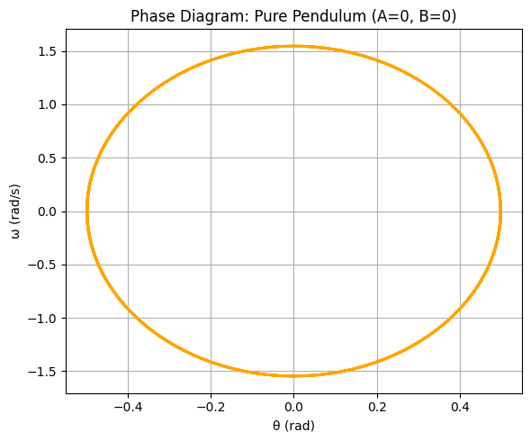

** 📌Investigating the Dynamics of a Forced Damped Pendulum**
Motivation
The forced damped pendulum is a captivating example of a physical system with intricate behavior resulting from the interplay of damping, restoring forces, and external driving forces. By introducing both damping and external periodic forcing, the system demonstrates a transition from simple harmonic motion to a rich spectrum of dynamics, including resonance, chaos, and quasiperiodic behavior. These phenomena serve as a foundation for understanding complex real-world systems, such as driven oscillators, climate systems, and mechanical structures under periodic stress.
Adding forcing introduces new parameters, such as the amplitude and frequency of the external force, which significantly affect the pendulum's behavior. By systematically varying these parameters, a diverse class of solutions can be observed, including synchronized oscillations, chaotic motion, and resonance phenomena. These behaviors not only highlight fundamental physics principles but also provide insights into engineering applications such as energy harvesting, vibration isolation, and mechanical resonance.
Theoretical Foundation
Governing Equation
The motion of a forced damped pendulum is governed by the following second-order nonlinear differential equation:
Variables:
- \((\theta(t))\): Angular displacement
- \((b)\): Damping coefficient
- \((g)\): Gravitational acceleration
- \((L)\): Length of the pendulum
- \((A)\): Amplitude of driving force
- \((\omega)\): Driving frequency
- This equation results from applying Newton's second law (or equivalently, the Lagrangian formalism) to the system.
Small-Angle Approximation
In pendulum motion, the restoring torque is proportional to \(\sin\theta\). However, when the angle \(\theta\) is small — typically less than about 10 degrees or 0.174 radians — we can use the mathematical approximation:
This is known as the small-angle approximation, and it comes from the Taylor series expansion of \(\sin\theta\) around \(\theta = 0\):
For small values of \(\theta\), the higher-order terms become negligible, so:
Substituting this into the original nonlinear equation simplifies the system:
This resulting equation is linear, which means it can be solved analytically using methods for second-order linear ODEs. Although this simplification loses some of the system's richer behavior (like chaos), it's very useful for understanding resonance, energy transfer, and small oscillation dynamics.
Resonance and Energy
When (\(\omega\) \(\approx\) \(omega_0\) = \(\sqrt{\frac{g}{L}}\)), the system can resonate:
- Amplitude increases significantly
- Energy transfer is most efficient
- Damping limits energy growth
2. Analysis of Dynamics
Parameter Effects
- Damping \((b)\): Reduces amplitude, slows oscillations
- Driving Amplitude \((A)\): Controls input energy, affects transition to chaos
- Driving Frequency \((\omega)\): Determines resonance conditions
Regular vs. Chaotic Motion
Regular motion: Predictable, periodic oscillations Chaotic motion: Sensitive to initial conditions, non-repeating
Transition observed by increasing \((A)\) or tuning \((\omega)\).
3. Practical Applications
The forced damped pendulum model finds application in a wide range of real-world systems. A few notable examples include:
- Energy Harvesting Devices Systems that convert mechanical vibrations into electrical energy, such as piezoelectric harvesters, often model their internal dynamics using forced damped oscillators.
- Suspension Bridges Bridges exposed to wind or rhythmic loading (e.g., traffic) can experience dangerous resonant oscillations. These are modeled and mitigated using forced damped pendulum principles (e.g., Tacoma Narrows Bridge case).
- Oscillating Electrical Circuits RLC circuits, which consist of a resistor (R), inductor (L), and capacitor (C), follow the same differential equation as the forced damped pendulum and exhibit similar dynamics.
- Vehicle Suspension Systems A car's suspension system, particularly its shock absorbers, is a real-world example of a forced damped system designed to reduce vibrations from road irregularities and improve ride comfort.
- Power Grid Stability (Generator Oscillations) In large-scale power systems, the rotors of generators can undergo mechanical oscillations. These are modeled using damped-driven pendulum analogs to design stabilizers and prevent outages.
- Biomechanics (Human Gait Analysis) During human walking, the motion of legs and joints often mimics the oscillatory behavior of pendulum-like systems. Modeling the swing phase of the leg as a forced damped pendulum helps in analyzing balance, energy efficiency, and rehabilitation strategies in biomechanics.
### Example Visualization

Figure: A schematic diagram of a series RLC circuit, which is mathematically analogous to a forced damped pendulum. The resistor (R) represents damping, the inductor (L) is analogous to mass, and the capacitor (C) represents the restoring force. Source: Wikipedia
Implementation
Pure Pendulum \((A = 0, B = 0)\)
In this case, we simulate the ideal pendulum with no damping and no external force:
- Damping coefficient (b): 0
- Driving force amplitude (A): 0
This simplifies the equation of motion to:
There is no energy loss (since) \(B = 0\)
and no energy input (since) \(A = 0\)
making the system conservative. The total mechanical energy remains constant throughout the motion.
As a result:
- The pendulum oscillates back and forth periodically
- The phase diagram shows closed elliptical trajectories
- This is a benchmark case for comparing more realistic systems
Such ideal behavior, while not common in real systems due to friction and resistance, is fundamental for understanding the physics of oscillatory systems.
Below is the phase diagram for the pure pendulum. The plot shows angular velocity \((\omega)\) versus angular displacement \((\theta)\)

Figure: Closed orbits in phase space indicating ideal periodic motion for an undamped, unforced pendulum.